Solv WMS: ikinci tur
İlk demodan sonra sorulan konular ve yeni gelenler: dalga toplama, liste ve kayıtlı görünüm, toplu transfer, LIFO ve depolama koşulu, görev ataması ve işlem teyidi, sayım ve COGI, randevu kuralları ve plakayla kabul, yük altında SAP kuyruğu.
Videoları bilgisayarda, büyük ekranda ve tam ekran izlemenizi öneririz.
-
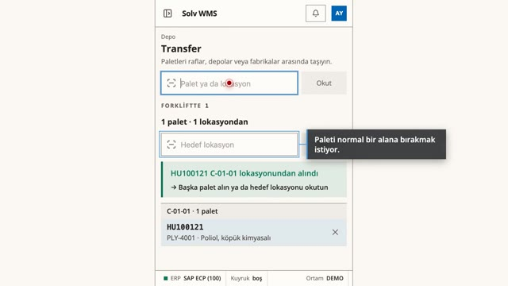
Genel bakış -
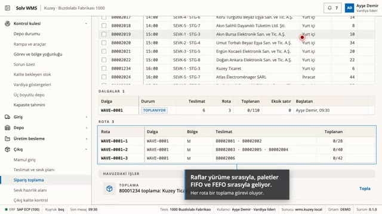
Dalga toplama ve yönlendirmeli toplama Birlikte sevk edilecek teslimatlar tek dalgada toplanır: bölge başına tek rota, raflar yürüme sırasıyla, paletler FIFO ve FEFO sırasıyla. El terminali sıradaki rafı ve paleti yazar. Tek teslimatlık toplamada da yol gösterir. -
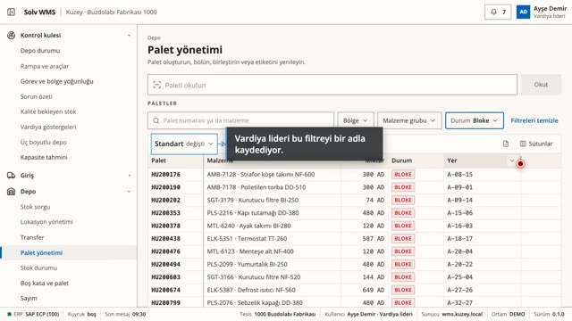
Liste, filtre ve kayıtlı görünüm Bütün listeler aynı biçimde: 20.000'i aşkın palet tek tabloda, sayılı filtreler, kişiye özel kayıtlı görünüm, sütun düzeni, Excel'e aktarma. Kayda tıklayınca detay yanda. -
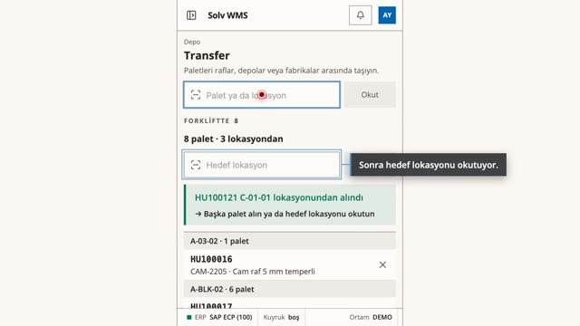
Toplu taşıma, iki okutmayla Palet yerinde okutulup alınır, forklifte geçer ve eski yeri boşalır. Hedef okutulunca hepsi oraya bırakılır, biri kurala uymazsa hiçbiri bırakılmaz. Her palet bırakıldığı anda SAP'ye ayrı transfer olarak gider. Ofis taşımayı planlayabilir: hedef ayrılır, görev terminale düşer. Kritik malzemenin taşıması onayla planlanır. -
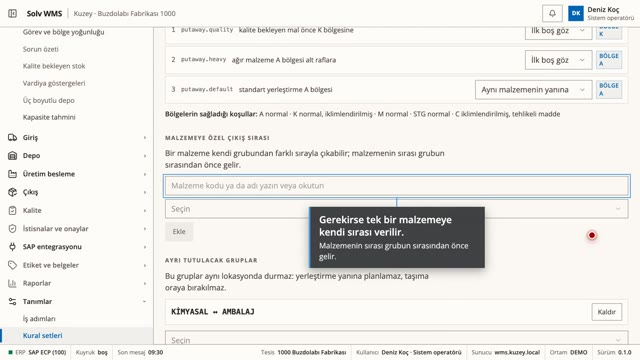
LIFO FIFO ve FEFO'nun yanında LIFO: en son giren önce çıkar. Malzeme grubu başına kural setinde, gerekirse tek bir malzemeye kendi sırası verilir. Hat beslemede sıra dışı palet reddedilir. -
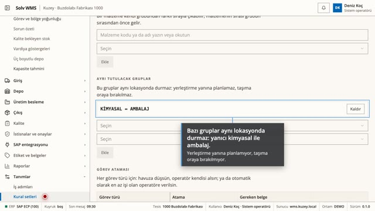
Depolama koşulları ve ayrı tutma Malzeme grubu başına depolama koşulu ve her bölgenin sağladığı koşul ana veride. Kimyasal iklimlendirilmiş alan dışına taşınamaz. Yanıcı kimyasal ile ambalaj gibi gruplar aynı lokasyonda durmaz. Yerleştirme ve taşıma bu kurallara uyar. -
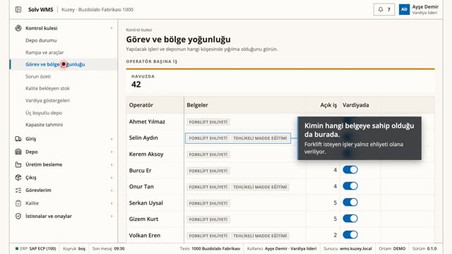
Görev ataması Görev türü başına havuz ya da otomatik atama. İş yalnız vardiyada olan ve gereken belgeye sahip olana verilir (forklift işleri ehliyetliye). Vardiyadan çıkanın başlamamış işleri yeniden dağıtılır. Vardiya lideri kişi ve bölge başına açık işi görür, görevi kişiye verir. -
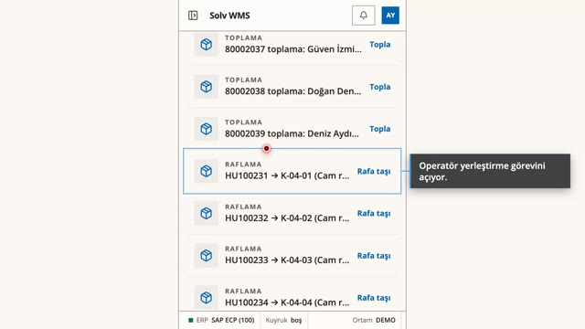
İşlem doğrulama İş doğru olsa bile sistem sorar: bu palet, bu yer, bu miktar. Emin misiniz? Yerleştirme, taşıma, hat besleme, toplama ve yüklemede ayrı ayrı açılır. Hangi malzemede sorulacağı kural setinde. İstenirse miktar sayılıp yazılır, tutmazsa hiçbir şey kaydedilmez. -
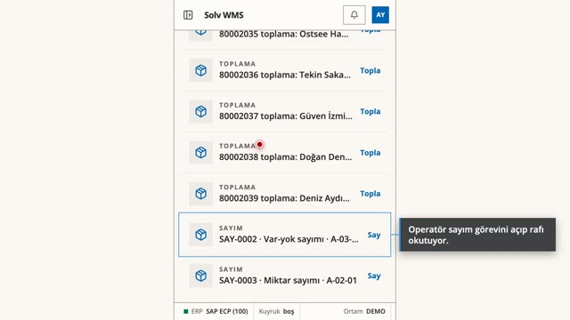
Sayım Kör sayım: sayan kişi beklenen paleti ve miktarı görmez. Sayım sürerken lokasyona palet girmez, çıkmaz. Her lokasyon okunarak ya da boş kaydedilerek kapanır. Sistemde olmayan palet malzemesiyle sayılır. Her fark onaya gider (711/712). İstenirse küçük farklar için tolerans tanımlanır. -
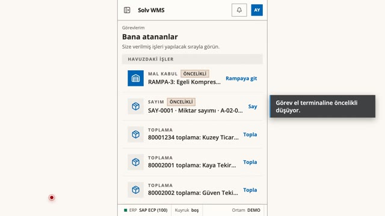
COGI'den otomatik sayım SAP'den gelen COGI kaydı sayım emrini kendiliğinden açar: son görüldüğü lokasyonlar ve hat. Operatör kör sayar, iki lokasyonu da kapatır. Fark onaylanınca SAP'de stok düzelir. -
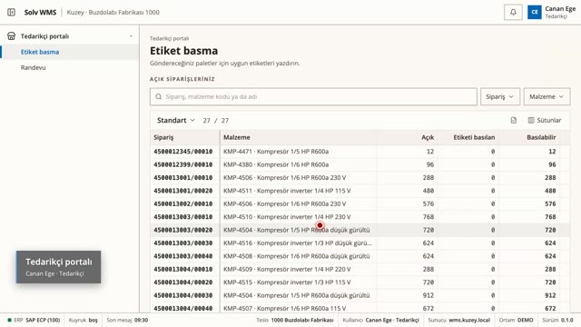
Randevu kuralları Firma başına günlük randevu hakkı ve izinli rampalar. Portal yalnız izin verilenleri gösterir. -
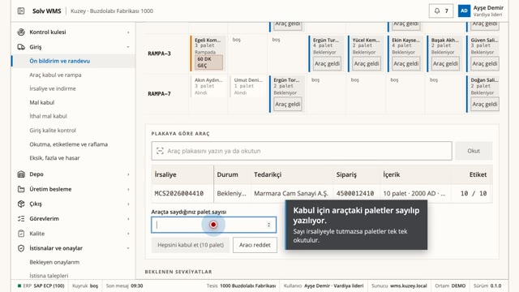
Plaka bazında kabul ve ret Plaka yazılınca araçtaki irsaliye, sipariş ve etiketler görünür. Araç tek tek okutmadan bütünüyle kabul ya da gerekçesiyle reddedilir. -
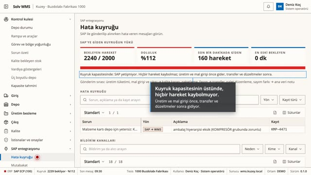
SAP kuyruğu yük altında Okutma SAP'yi beklemez. Birikme arkada boşalır, üretim ve mal girişi önce gider. Kapasite ve uyarı eşiği kural setinde. 2.400 hareketlik yük testi.
Demo ortamı: SAP bağlantısı, firmalar ve veriler kurgu.
Solv · solv.com.tr